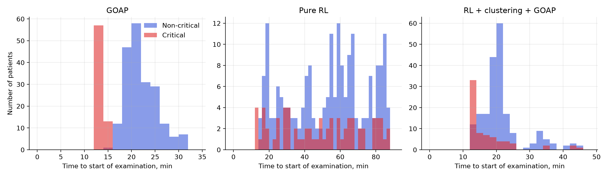
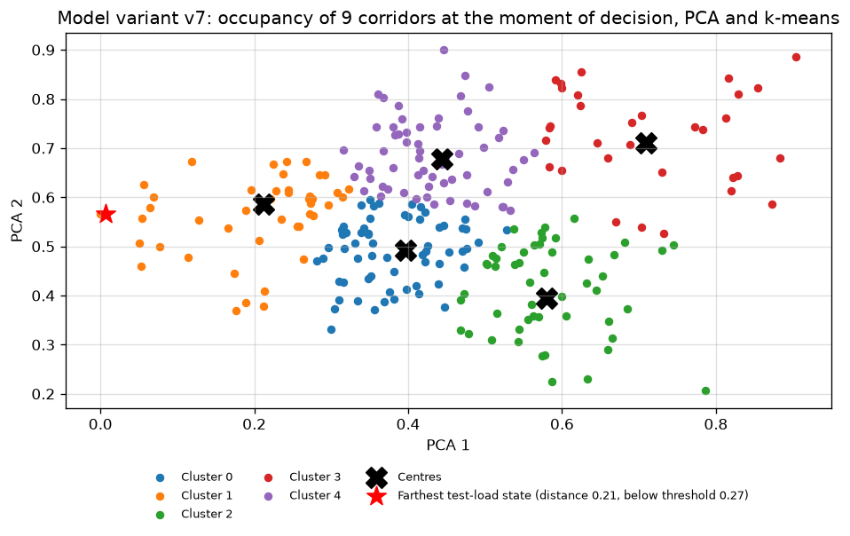
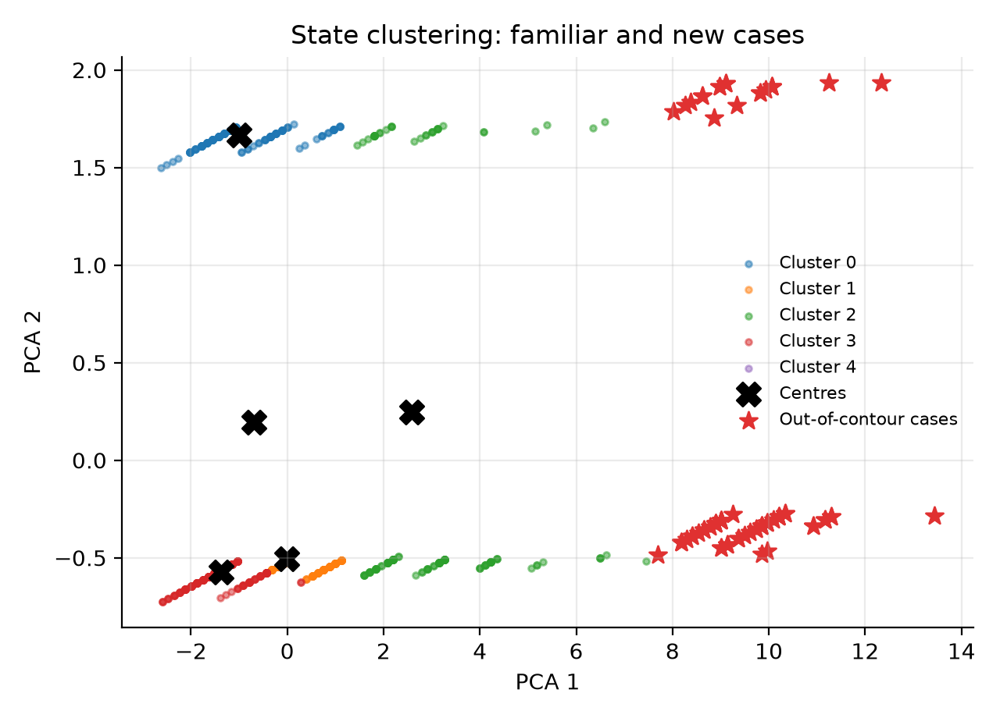

Reinforcement learning for patient distribution inside a hospital: open re-implementation
What this is
The paper compares three controllers for moving patients through the corridors and boxes of an emergency department: GOAP (goal-oriented action planning), tabular reinforcement learning trained on cases recorded from GOAP, and a hybrid in which k-means clustering of the states decides whether RL or GOAP acts. The original code and the seed of the paper's case study were not preserved. This repository is an open re-implementation: the model is rebuilt from the paper's description, and its free parameters are calibrated so that the mean waiting times match the values read from the figures.
Model
- Reception department with three one-lane corridors and several boxes; critical and non-critical patients.
- GOAP chooses the corridor by expected time; critical patients have priority in queues.
- RL is tabular Q-learning on cases recorded under GOAP; in an unfamiliar state it takes a default action.
- Hybrid: k-means (k = 5) over the states of the sample; if the current state is farther from the centres than a threshold, GOAP decides, otherwise RL.
Results
Targets read from the paper's figures (critical / non-critical, minutes): GOAP 14 / 21, pure RL 53 / 49, hybrid 19 / 23.
Single run as in the paper (seed 1; 70 critical and 203 non-critical patients)
| Method | Critical, min | Non-critical, min |
|---|---|---|
| GOAP | 13.6 ± 0.6 | 22.2 ± 3.3 |
| Pure RL | 48.9 ± 23.0 | 53.2 ± 21.6 |
| RL + clustering + GOAP | 17.7 ± 7.2 | 21.6 ± 6.5 |

30 other seeds (101-130), same load; mean over seeds ± SD between seeds
| Method | Critical, min | Non-critical, min |
|---|---|---|
| GOAP | 13.7 ± 0.2 | 22.7 ± 1.2 |
| Pure RL | 51.5 ± 10.9 | 52.4 ± 10.8 |
| RL + clustering + GOAP | 18.8 ± 0.9 | 21.6 ± 1.1 |
Control with the training load: all three controllers give 13-15 minutes. The hybrid hands 48 % of the decisions to GOAP under the test load and 0 % under the training load.
Limits
- Calibrated, not independent. 8 free parameters were calibrated against 6 target means read from the figures. The agreement of the means is a result of calibration, and the parameter set is not unique.
- Spread does not match. The model SD of GOAP for critical patients is 0.6 minutes against about 6 in the paper's figure; the SD of pure RL is 23 minutes against about 7.
- Clustering picture. In the model behind the tables the PCA projection of the states is degenerate (two lines, second figure below), so the paper's picture is not reproduced. The first figure is an illustration of the clustering step from a different variant of the model (v7, state = occupancy of nine corridors). It is not the model behind the tables, and its waiting times are not reported because they were not stable across seeds. In that variant the farthest test-load state lies below the threshold, so no state is flagged as unfamiliar in that picture.
- RL gap depends on the load. At the training load RL matches GOAP. The gap appears because the test load is higher than the one RL was trained on.
- No clinical data. This is a simulation without real patients. No clinical conclusion follows from it.
- Not the original code. The numbers describe this model, not the one that produced the paper. The paper's own figures are not reproduced here.


Run
pip install -r requirements.txt python code/reconstruction_report.py results
The run takes a few seconds and is deterministic. It writes the tables and both figures. code/fit_rl_params.py and code/fit_rl_stage2.py repeat the parameter search; the chosen set is in code/_fit_best.json.
Files
code/reconstruct_rl_cluster.py- model: corridors, boxes, GOAP, tabular RL, k-means contourcode/reconstruction_report.py- case study, other seeds, control, figurescode/fit_rl_params.py,code/fit_rl_stage2.py,code/_fit_best.json- parameter search and chosen parameterscode/variant_v7/- variant v7 of the model, used only for the clustering illustration